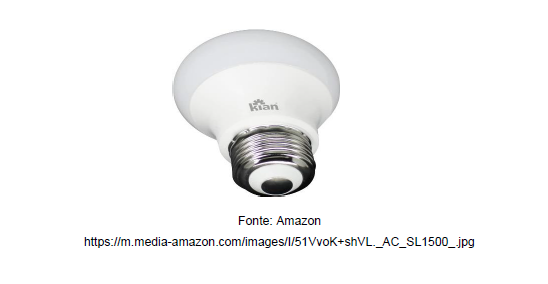
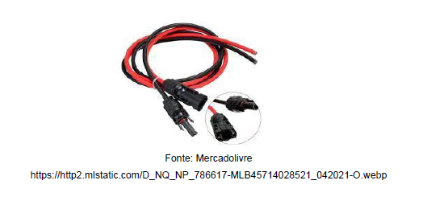
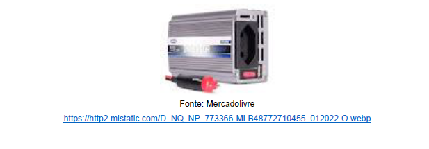

4. DESENVOLVIMENTO
Para dar início ao projeto foram realizadas pesquisas e um reuniões entre os integrantes para entender,
quais componente seriam necessários para criação da lâmpada solar inteligente, após estudos foi definido
os matérias necessários para o desenvolvimento.
1. O primeiro material necessário
para construção do produto foi a lâmpada, com base em informações atuais, a que é menos agressiva
ao meio ambiente, e proporciona um melhor desempenho em relação a durabilidade e eficiência
energética é a lâmpada de Led.

2. Definir a placa fotovoltaica, a mesma deve possui 155w para que possa sustentar até 12 lâmpadas em simultâneo.

3. Escolha do cabeamento e do conector MC4, esses são responsáveis pela conexão e transmissão da energia, sendo crucial para o projeto.

4. A última peça é o inversor, essa peça serve para alternar entre a rede elétrica e a energia convertida pelo sol, protegendo contra curto circuito.
